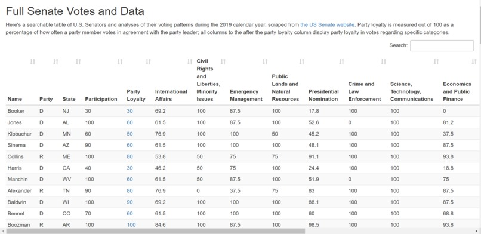

Portfolio
Here are some of the many projects I've worked on in the past few years.
Databricks
August 2023 - PresentAs a Software Engineer at Databricks, I develop the cloud storage and credentials infrastructure powering enterprise data platforms globally. I built an automated multi-cloud blob storage provisioning system managing 1,000,000+ buckets and 500+ TB of customer data across 100k+ users, and designed a scalable cloud credential management system enabling secure cross-region, cross-cloud data access for 10,000+ enterprise workspaces. Through comprehensive monitoring and rigorous change management, we've achieved 99.9999% service uptime.
Berkeley Artificial Intelligence Research
September 2022 - May 2024As a Graduate Student Researcher in the Berkeley Speech Group, my Master's research focused on Differentiable Digital Signal Processing for articulatory synthesis—teaching computers to model how human vocal tracts produce speech. I developed a novel real-time ML model requiring only 0.4M parameters (vs. 9M baseline), improving Word Error Rate by 1.63% (to 6.67%) and Mean Opinion Score by 0.16 (to 3.74) while achieving 4.9x inference speedup on CPU. This performance jump meant real-time speech synthesis could run on everyday devices, making assistive communication technologies more accessible. Read my Master's thesis.
QubeSat
Fall 2019 - August 2023As part of the mechanical subteam at Space Technologies at Cal, I worked on a four-year mission to send quantum gyroscopes into space for the first time. I designed the CubeSat structure and deployment mechanism, integrating quantum gyroscope payloads and sensors while using SolidWorks to simulate and stress-test designs for launch and space environments. I also wrote the flight software controlling the satellite in orbit. Our goal was proving quantum gyroscopes could work in space, offering revolutionary precision compared to traditional MEMS gyroscopes—critical for future deep space missions. After years of work, QubeSat successfully launched as part of NASA's ELaNa 41 mission, turning an undergraduate project into orbiting hardware. Click here to check out the website!

SpaceX
May 2022 - August 2022As a Software Engineer Intern at SpaceX, I designed and implemented critical test infrastructure for satellite hardware torque and energy margin verification, ensuring satellites could maneuver properly in space. I developed a spectral analysis system using Short-Time Fourier Transform (STFT) to detect reaction wheel bearing faults before they became flight risks, reducing test time by 10x. I also created a comprehensive test automation suite for flight component qualification, integrating hardware control interfaces with data acquisition systems. When your code tests hardware destined for orbit, there's no room for "close enough."
Amazon Web Services
July 2021 - October 2021As an SDE Intern at AWS, I worked on AWS Marketplace, the platform where companies discover and deploy ML models at scale. I architected and implemented full-stack tooling to automate ML product private offer creation, reducing what previously took hours of manual work to minutes. I built RESTful APIs with database integration and established a robust CI/CD pipeline with automated testing, transforming a fragile manual workflow into a reliable system. The project went into production immediately, which was pretty rewarding for a three-month internship.
MIT Lincoln Laboratory
May 2021 - July 2021As a Research Intern at MIT Lincoln Laboratory, I worked on tracking satellites when their signals are buried in noise and interference. I led the design and construction of a custom 4-antenna array system for tracking Lincoln Experimental Satellites (LES), capturing faint 230 MHz signals from multiple satellites simultaneously amid co-channel interference. By developing and optimizing a Blind Adaptive Beamforming algorithm, I improved signal-to-noise ratio by 30%. The work spanned from theory to hardware: implementing end-to-end integration testing using phase shifters and RF components to simulate antenna array geometry, then processing real data through GNURadio, Python, and MATLAB.
Ultima Genomics
May 2020 - May 2021As an Engineering Intern at Ultima Genomics, I worked on optical systems for DNA sequencing instruments, where precision laser alignment makes the difference between readable data and noise. I developed instrument control software in Python that automated optical system calibration and alignment, and built a data processing pipeline integrating multiple sensors and hardware interfaces using Python, MATLAB, and ACS. I also implemented a real-time monitoring system for laser performance metrics with automated alerts, catching issues before they impacted sequencing runs. The project spanned component design, part manufacturing, and software implementation.
Berkeley Lab
December 2019 - January 2021As a Software Research Assistant at Lawrence Berkeley National Laboratory, I worked with researchers exploring nitrogen-vacancy centers in diamond for nuclear magnetic resonance—physics experiments requiring precise control of lasers, waveform generators, and sensitive detectors. I developed an automated testing framework in Python/MATLAB that reduced experiment runtime by 90% by eliminating manual instrument control. The system integrated multiple scientific instruments into a unified interface and automatically processed results, cutting analysis time by 70%. Watching researchers go from spending entire days on one experimental run to completing multiple runs in an afternoon was pretty cool.
Mood for Zoom
Spring 2020During quarantine, professors lost the ability to "read the room" over Zoom, so for LA Hacks my friends and I built Mood for Zoom—a real-time aggregate mood visualization tool. We used the Google Cloud Vision API to read emotions from faces, PyAutoGUI to continuously capture screenshots, and TkInter to display the aggregate mood to presenters. The project won 2nd Place Overall and an honorable mention for Best Use of Machine Learning. Check out the Devpost!

Senate Watch
Spring 2020Most Americans know little about how their representatives actually vote, so we built Senate Watch—a tool that scrapes senate.gov to visualize voting patterns and party loyalty. We used Beautiful Soup and requests for scraping, Python for data processing, and jQuery/JavaScript for the frontend. The project helped make congressional voting records more transparent and accessible. Check out the Devpost!
Crawler Robot
Summer 2018At COSMOS UCSD, I designed a walking robot from scratch with an insectoid design. My partner and I built everything—circuit design, Raspberry Pi code with Adafruit PWM drivers, and 3D printed chassis. In the final time-based race, our robot beat competitors by 50%.